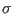
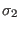
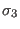
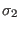
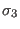
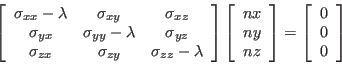
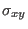
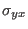
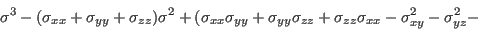
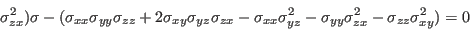

Principal Stresses
Entity names: PS1, PS2, PS3, worstPS
The principal stresses  are named PS1, PS2, PS3. From the three principal stresses the absolute maximum value will be calculated and named worstPS. For example if a node has the three values 100, 0 and -110 MPa then -110 MPa would be shown. The three principal stresses    are derived from the following equation:
  are derived from the following equation:

They are given by the three roots of the equation (stress tensor is symmetric:  =  etc.):

